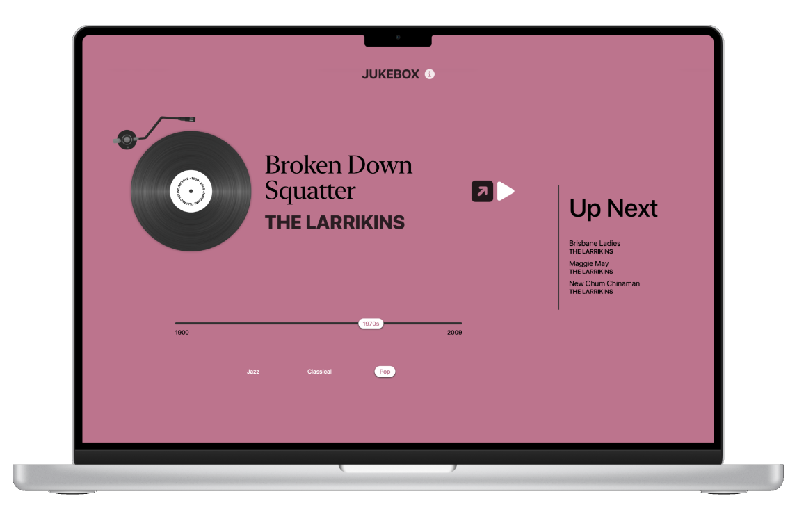
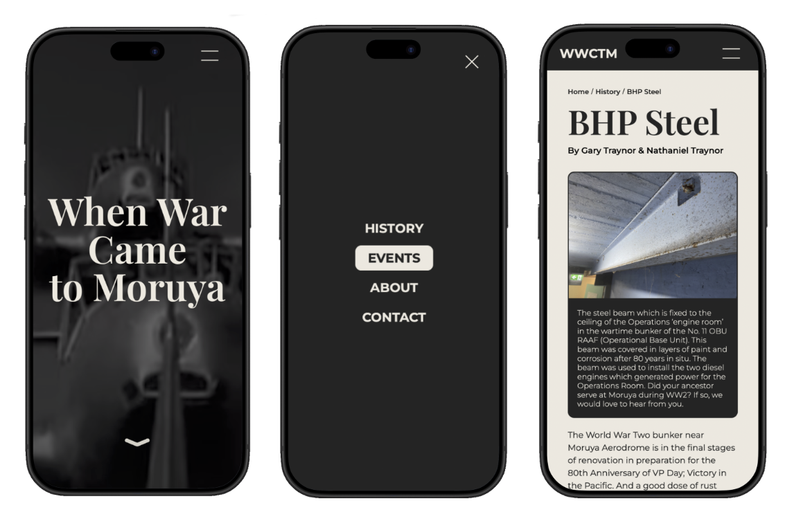
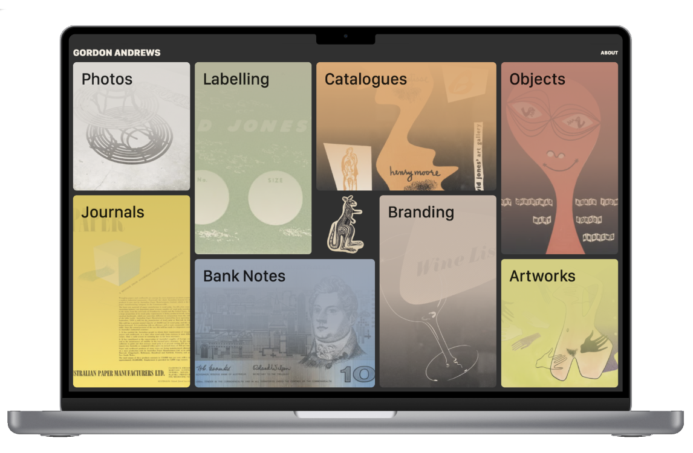

Jukebox ↗
Jukebox uses the National Film and Sound Archive's API to access the archive of Australian Jazz, Classcial, and Pop music over the past century in an interactive and exploratory manner.

Moruya War Museum ↗
The Moruya War Museum, 'When War Came to Moruya', was designed as a central hub for historical documentation, event information, and important details about wartime in Moruya (NSW) and its related museum.

The Gordon Andrews Collection ↗
Leveraging the Powerhouse's substantial library, The Gordon Andrews Collection highlights a curated selection of Andrews' work across banknotes, art, photography, and more.
